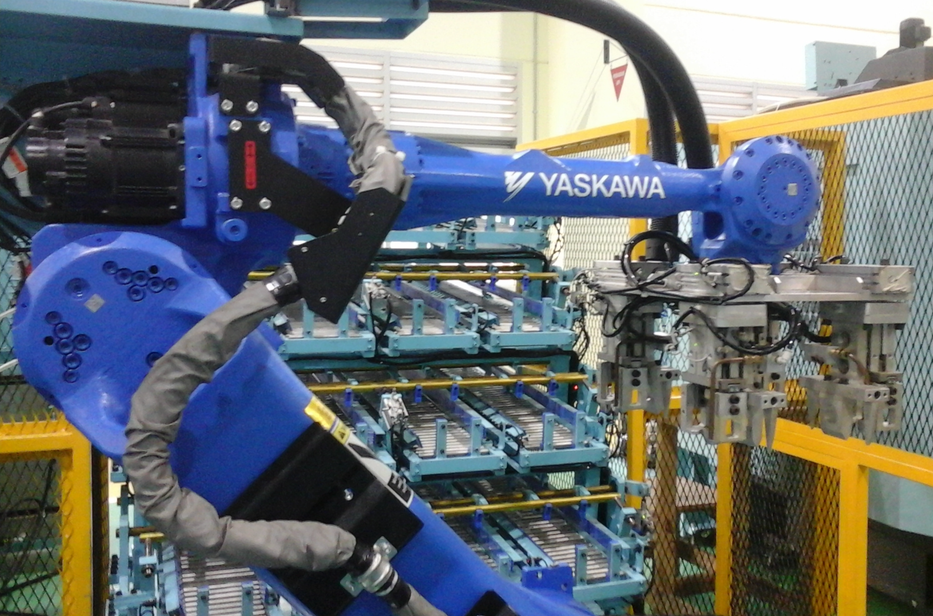
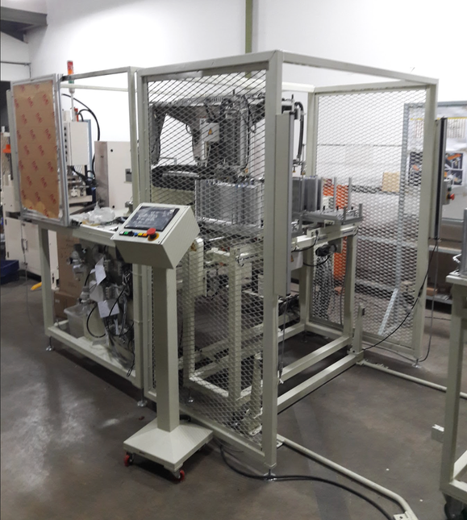
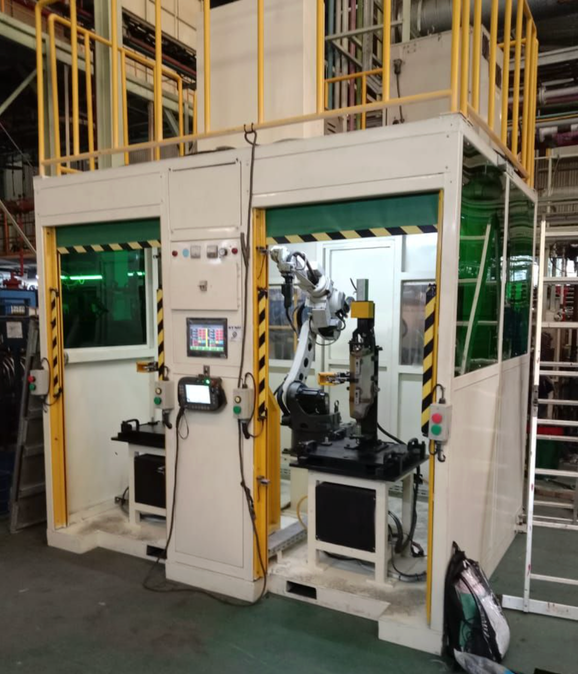
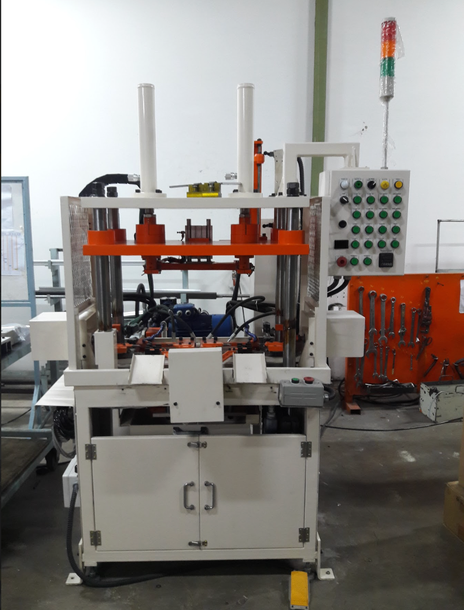
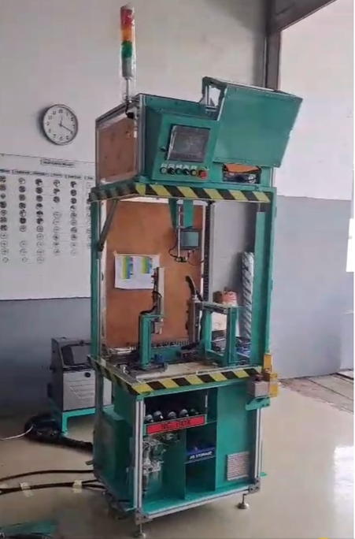
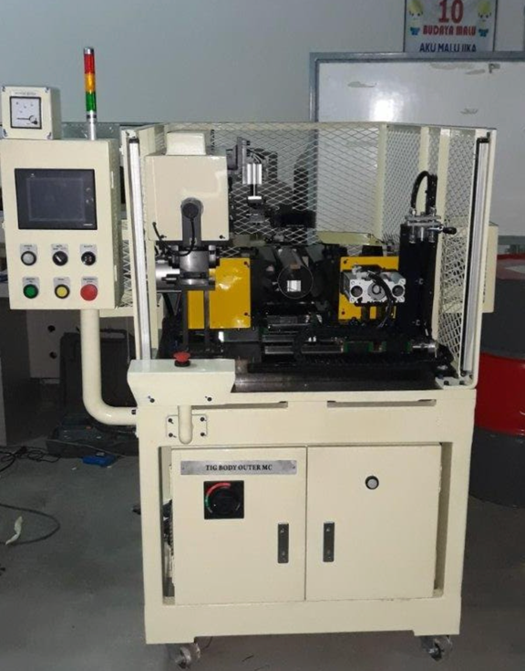

General TradingIndustrial equipment & supplies
INDUSTRIAL SUPPORT & ENGINEERING
Your Partner in Industrial Solutions
General trading, automation, system integration and Special Purpose Machine engineering for industrial customers in Indonesia.
PRODUCTS. AUTOMATION. ENGINEERING. Practical support for industrial requirements.
Engineering & IntegrationAutomation, systems & SPM
Multi-brand SupportMechanical, electrical, IT & more
Industrial SupportFrom sourcing to project execution
TKC / 01 BOGOR · INDONESIA
2006
TRADING · AUTOMATION · SPM INDUSTRIAL SUPPORT Supply · Integrate · Design & Build
ESTABLISHED 18 October 2006
ABOUT TKC
General trading and engineering, built around industrial needs.
PT Trimuri Karya Cipta is a local Indonesian company supporting customers through industrial procurement and engineering solutions.
Our General Trading division supports procurement of mechanical, electrical, IT and stationery products. Our engineering team supports automation systems, system integration, and mechatronic design & build for Special Purpose Machines.
01 Quality products & services
02 Strong relationships
03 Integrity
04 Customer satisfaction
BUSINESS AREAS
Two core divisions supporting industrial requirements.
TKC works through two complementary business areas: industrial procurement through General Trading, and engineering execution through the System Integrator / Engineering Project team.
01 GENERAL TRADING DIVISION
Industrial procurement across essential product categories.
Supporting customers in Indonesia with the procurement of mechanical, electrical, IT and stationery products.
Mechanical Electrical IT & IoT Stationery
ROLE SOURCE & SUPPLY
02 SYSTEM INTEGRATOR / ENGINEERING PROJECT
Automation, integration and Special Purpose Machine engineering.
Supporting automation systems with experience in mechatronic design & build for Special Purpose Machines.
Automation System Integrator SPM Design & Build
ROLE INTEGRATE & BUILD
TKC BUSINESS MODEL
Customer → TKC → Trading / Engineering → Supply / Design & Build
CAPABILITIES
What TKC can do.
From industrial procurement to automation, mechatronic design and production support, TKC combines trading and engineering capabilities around practical customer requirements.
01
Source & Supply
Procurement support for mechanical, electrical, IT & IoT, and stationery products.
02
Automation & System Integration
Engineering support for automation systems and system integration requirements.
03
Mechatronic Design & Build
Design and build experience for Special Purpose Machines and mechatronic applications.
04
Production & Quality
Production activities covering cutting, welding, machining, assembling, finishing, and quality control.
TKC CAPABILITY PATH
SOURCE → INTEGRATE → DESIGN & BUILD → PRODUCTION & QUALITY
SELECTED PROJECTS
Selected engineering projects.
A selection of TKC engineering and automation projects. More past projects will be available in our Engineering Project Portfolio PDF.

01PT YUTAKA
TIG Body Machine
Engineering Project
02PT IPM
Broaching Machine
Engineering Project
03PT DENSO
Auto Transfer Hole Punching Machine
Engineering Project
04PT YUTAKA
Cabin Robot
Engineering Project
05PT ASTEMO
Free Length Check Machine
Engineering Project
06PT AHM
Stocker Out
Engineering ProjectFeatured project examples above. A broader history of engineering work will be available in our project portfolio.
ENGINEERING PROJECT PORTFOLIO
More projects. More experience.
Want to explore TKC's past engineering work? A dedicated PDF portfolio featuring more completed projects will be available here.
GENERAL TRADING
Selected brands from our supply experience.
Explore a curated selection of brands TKC has experience supplying. A broader list of brands, product categories and customers will be available in our Company Profile.
NTN
THK
SKF
IKO
TSUBAKI
FESTO
SMC
SCHMALZ
OMRON
SIEMENS
YASKAWA
SICK
SCHMERSAL
AUTONICS
MITSUBISHI
FLUKE
HP
DELL
LENOVO
CANON
EPSON
3M
KRISBOW
LOGITECH
Selected examples only. Please refer to our Company Profile for a broader trading and customer portfolio.
MORE BRANDS & CUSTOMERS
View Company Profile details →Looking for more brands or customer references? Explore the broader portfolio in our Company Profile.
ENGINEERING CUSTOMERS
Selected engineering customers.
A selection of companies TKC has supported across automotive, manufacturing and food & beverage. Our Company Profile will provide a broader list of customer references.
Astra Group
- DENSO
- Astemo
- PT Yutaka Manufacturing Indonesia
- KYB
- GMI
- PT Inti Ganda Perdana
- Akebono
- UD Trucks
Non-Astra Group
- Panasonic
- Cataler
- Toyota Tsusho
- AutoTech
- PT Hamabo Indonesia
- Yuasa
- Nihon Denkei
- SANY
Food & Beverage
- Ajinomoto
- PT Otsuka Distribution Indonesia
- PT Indolakto
Selected engineering project examples are featured in the Projects section above.
COMPANY PROFILE
Explore more of TKC's experience.
Looking for more brands, product categories or customer references? Our Company Profile PDF will provide a broader overview. Available soon.
COMMUNITY ACTIVITY
CSR & COMMUNITY
Responsibility beyond the workplace.
TKC includes Corporate Social Responsibility as part of its company activities, reflecting attention to community alongside its industrial work.
01
CORPORATE SOCIAL RESPONSIBILITY
A simple part of the company story: business, people and community.
CONTACT TKC
Start with the right team.
For product sourcing and procurement, contact General Trading. For automation, system integration and Special Purpose Machine requirements, contact the Engineering Project team.
01 GENERAL TRADING DIVISION
Product sourcing & procurement
Mechanical, electrical, IT, stationery and supporting industrial requirements.
02 ENGINEERING PROJECT DIVISION
Automation, integration & SPM
Engineering support for automation systems, system integration and mechatronic design & build.
OFFICE & WORKSHOP
Jl. Canadian Broadway, Pergudangan COMMPARK Block B-003, Kota Wisata, Narogong Cileungsi-Bogor